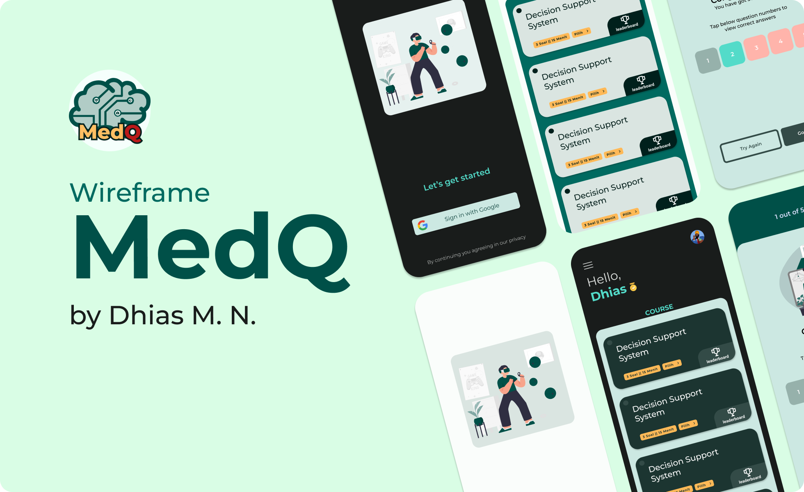

Dhias M Naufal
Front-end Engineer
"Successful is created by the best combination between Commitment, Discipline and Consistency"
This is Everything About me!

"Successful is created by the best combination between Commitment, Discipline and Consistency"
A passionate and determined determined recent graduate in Information Engineering, committed to continuous learning and eager to apply my knowledge to real-world challenges. I am highly interested in the field of Software Engineering, such as designing applications and solving problems that arise within software systems. A curious thinker who's ambitious, loves learning, doesn't give up easily, and enjoys solving problems. I thrive in both team-oriented environments, where collaboration fosters innovation, and when working independently to tackle complex problems.

| KHDTK Wanagama Project | MEDQ Final Project |
|---|---|

|

|